Specially Organised by the Mathematics Society at Constructor University (MSCU)
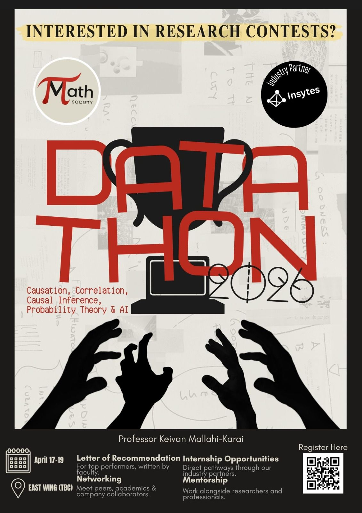
Datathon 2026 — event banner
Follow Us As We Go Through The Journey Of The First Ever Datathon 2026!
The Constructor University Datathon 2026 invites participants to tackle high-level challenges in causal reasoning and probabilistic modeling. Sponsored by Insytes GmbH, this three-day event challenges teams to apply theory—from directed acyclic graphs to correlation analysis—to practical industry problems. Participants will benefit from the direct support of Insytes GmbH and academic guidance from our specialized faculty.
About Insytes GmbH
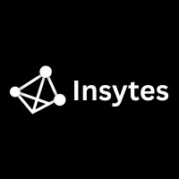
Insytes GmbH — industry partner
Insytes GmbH is a Bremen-based startup founded by Constructor University alumni, working at the intersection of artificial intelligence and industrial data. The company is backed by the EXIST programme of the German Federal Ministry for Economic Affairs, supported through the University of Bremen and BRIDGE.
The team is led by co-founders Karim Abualrish and Varun Patel. Karim is also an active member of the Bremen startup community, helping foster connections between entrepreneurs, researchers, and industry.
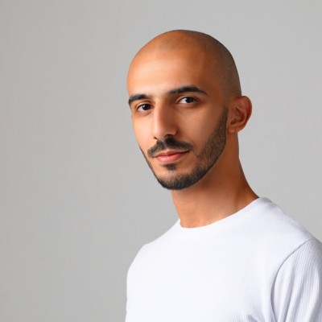
Karim Abualrish Co-founder, Insytes GmbH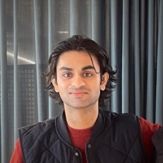
Varun Patel Co-founder, Insytes GmbHThis year's Datathon centred on one of the most fundamental questions in data science: not just what was happening in the data, but why. The theme — Causation, Correlation & Causal Inference — challenged participants to move beyond surface-level patterns and build a rigorous understanding of cause and effect.
At the heart of the challenge was causal inference — a framework for reasoning about the effect of interventions and counterfactuals in complex systems. Participants worked with Directed Acyclic Graphs (DAGs) to map out causal relationships between variables, identify confounders, and determine what could and could not be inferred from observational data alone.
Probabilistic reasoning tied it all together — giving teams the tools to quantify uncertainty, model dependencies, and draw conclusions that were not just statistically sound, but causally meaningful. Whether building models, interpreting results, or designing interventions, thinking probabilistically was key to getting the right answer for the right reasons.
Day 1 focuses on orientation, context-setting, and launching the challenge. The challenge introduction and technical briefing run back to back so teams have a complete picture before the keynote, academic talk, and panel discussion. Teams begin working in the afternoon.
Day 1 was the first day of the Datathon. It was a day of orientation, context-setting, and launching the challenge. The challenge introduction and technical briefing ran back to back so teams had a complete picture before the keynote, academic talk, and panel discussion. Teams began working in the afternoon.
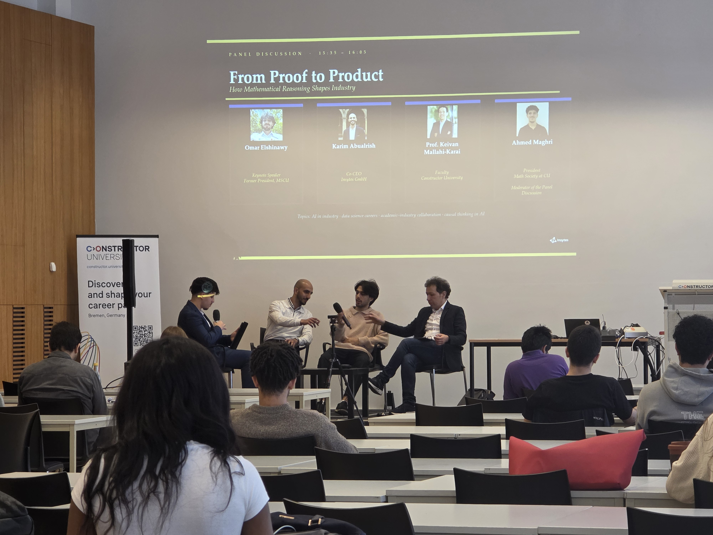
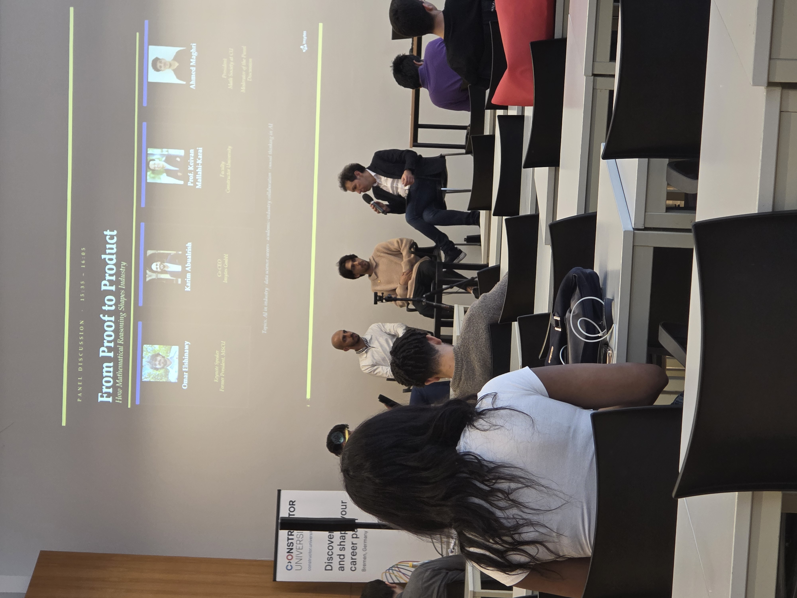
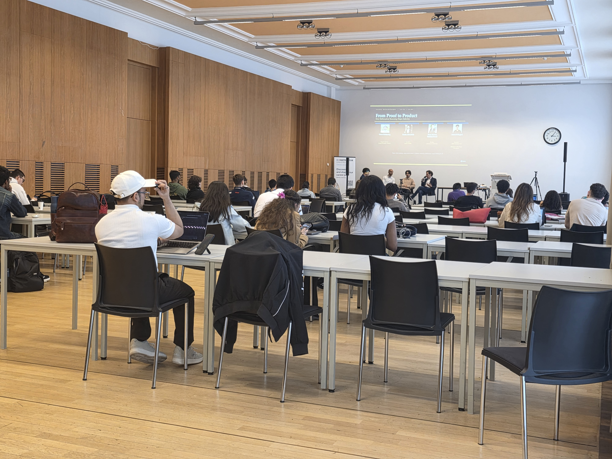
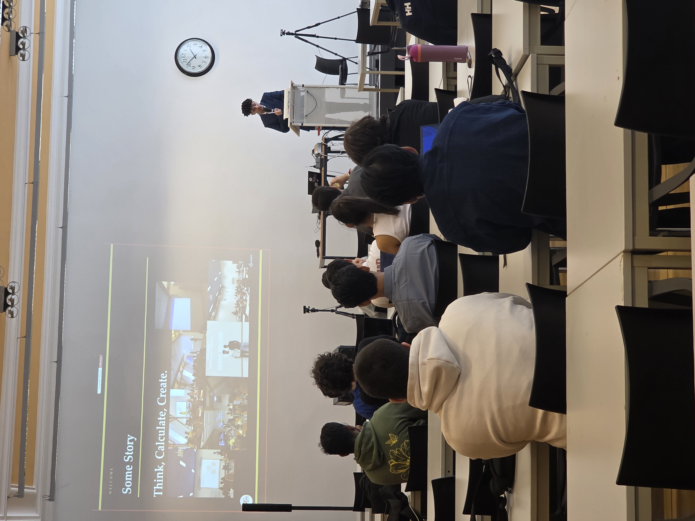
Day 2 is primarily a free working day for teams, focused on independent development of solutions. Teams formalize causal hypotheses using DAGs, build causal and probabilistic models, and iterate on testing and validation. Optional in-person support is available for teams who need help.
Day 2 takes place in the IRC Seminar Room, with lunch self-arranged.
Day 3 is for finalization, submission, judging, and closing. Teams finalize code, report, and slides in the morning, then submit all deliverables by noon. Presentations and evaluation follow in the afternoon, ending with awards and closing networking.
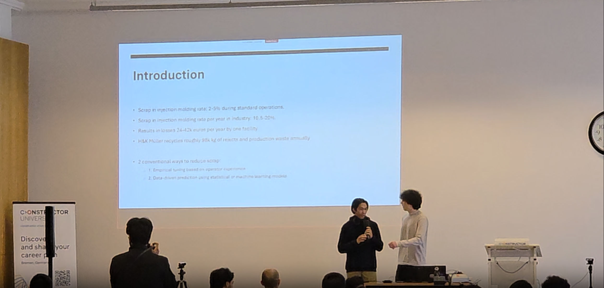
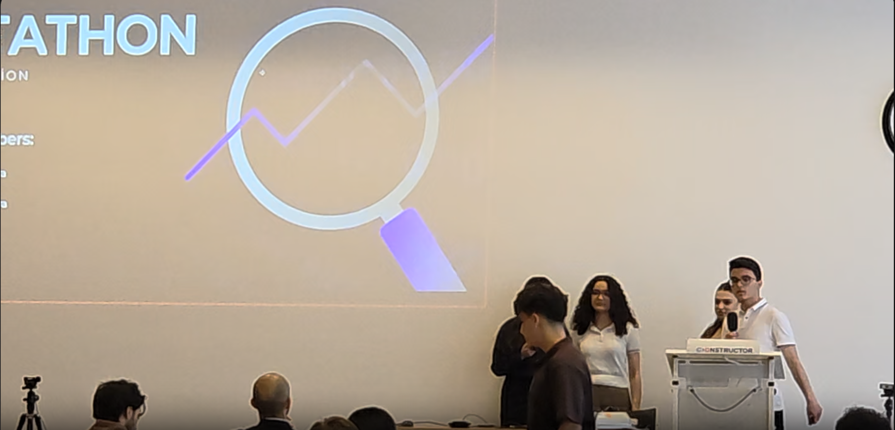
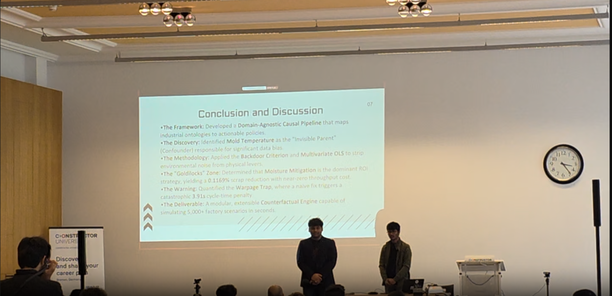
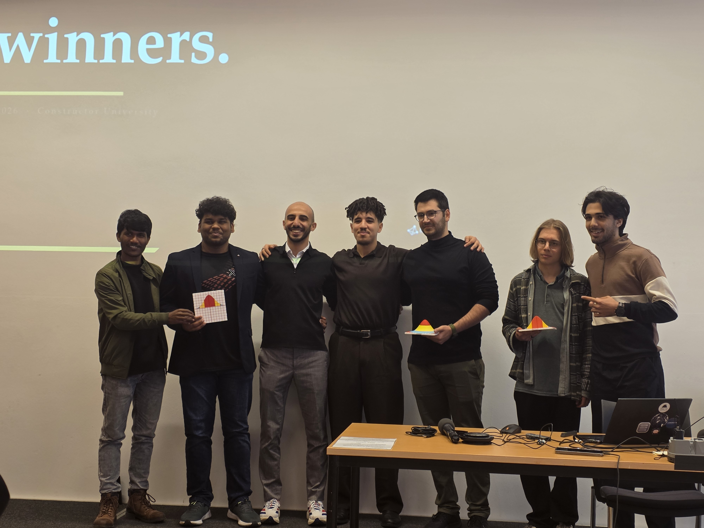
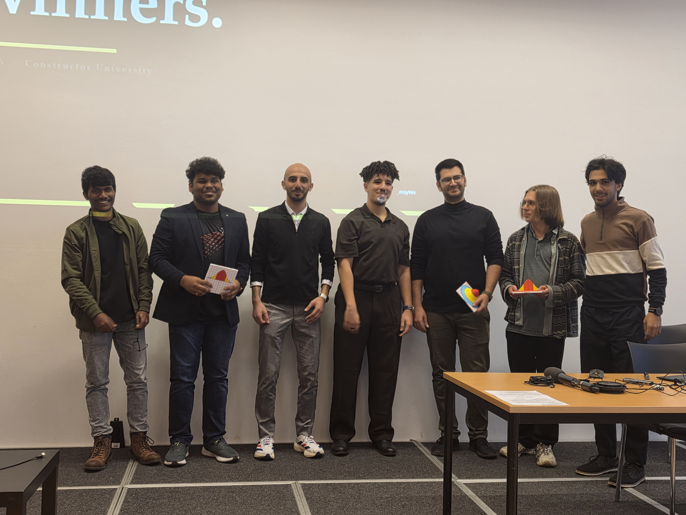
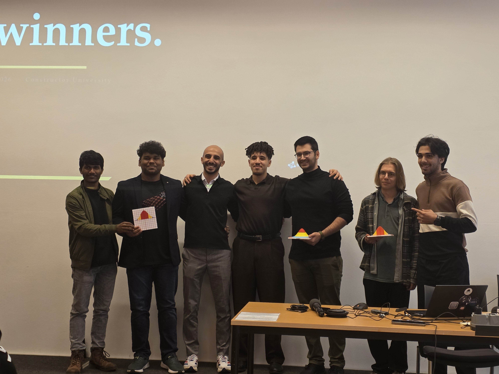
Sponsors & Partners
The Datathon 2026 is organised with the support of Constructor University as
the host institution and Insytes GmbH as the industry partner. Insytes GmbH
contributes the challenge problem, dataset, mentorship, and judging — bringing real-world
industry expertise directly into the competition.